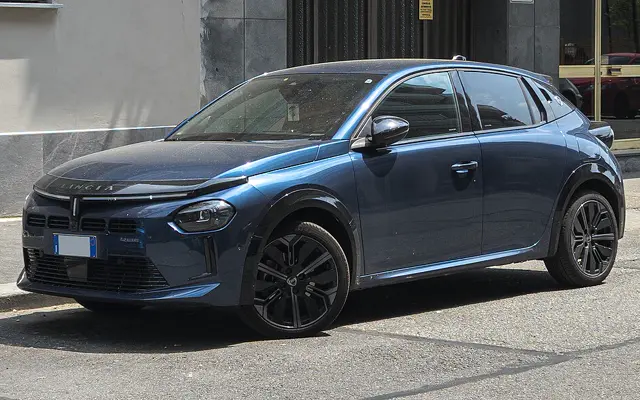

Par Motor › Precios por modelo › Lancia Ypsilon
Precio de segunda mano · noviembre de 2026¿Cuánto vale un Lancia Ypsilon de segunda mano?

Precio justo estimado de un Lancia Ypsilon usado en España, año por año, con los kilómetros normales para su edad y en buen estado: de 5.000 € a 30.800 €. Para tasar el tuyo con sus kilómetros reales y su estado, usa el tasador gratis.
Precios del Lancia Ypsilon por año
Ypsilon (2011) (2011–2024)
Precio de nuevo: 1.2 69 CV, 12.000 € · 1.3 Multijet 95 CV, 14.500 € · 1.0 Hybrid 70 CV, 15.000 €
| Año | Km normales | 1.2 69 CV · Gasolina | 1.3 Multijet 95 CV · Diésel | 1.0 Hybrid 70 CV · Híbrido |
|---|---|---|---|---|
| 2024 | 35.000 km | 10.100 € | 11.700 € | 13.200 € |
| 2023 | 50.000 km | 9.400 € | 10.900 € | 12.400 € |
| 2022 | 65.000 km | 8.800 € | 9.400 € | 11.600 € |
| 2021 | 80.000 km | 8.000 € | 8.700 € | 10.400 € |
| 2020 | 95.000 km | 7.000 € | 8.700 € | 9.200 € |
| 2019 | 100.000 km | 6.600 € | 8.700 € | 8.700 € |
| 2018 | 100.000 km | 6.500 € | 8.600 € | 8.500 € |
| 2017 | 100.000 km | 6.400 € | 8.500 € | 8.400 € |
| 2016 | 100.000 km | 6.300 € | 8.100 € | 8.200 € |
| 2015 | 100.000 km | 6.100 € | 7.500 € | 8.000 € |
| 2014 | 100.000 km | 6.000 € | 7.100 € | 7.800 € |
| 2013 | 100.000 km | 5.700 € | 6.600 € | 7.400 € |
| 2012 | 100.000 km | 5.300 € | 6.200 € | 7.000 € |
| 2011 | 100.000 km | 5.000 € | 5.800 € | 6.500 € |
Ypsilon (2024) (2024–hoy)
Precio de nuevo: 1.2 Hybrid 100 CV, 23.000 € · Ypsilon Eléctrico 156 CV, 35.000 €
| Año | Km normales | 1.2 Hybrid 100 CV · Híbrido | Ypsilon Eléctrico 156 CV · Eléctrico |
|---|---|---|---|
| 2026 | 5.000 km | 25.000 € | 30.800 € |
| 2025 | 20.000 km | 21.600 € | 26.600 € |
| 2024 | 35.000 km | 20.200 € | 24.900 € |
Kilómetros normales: 15.000 al año en gasolina, híbridos y eléctricos, y 20.000 en diésel, con un máximo de 100.000 km (por encima no tasamos: el precio depende demasiado del historial de cada coche). Cifras redondeadas a 100 €.
Preguntas frecuentes
¿Cuánto vale un Lancia Ypsilon de segunda mano?
Según el año, la versión y los kilómetros, un Lancia Ypsilon usado vale hoy de 5.000 € a 30.800 € en España. El más barato de nuestra tabla es un 1.2 de 2011 (5.000 €) y el más caro un Ypsilon Eléctrico de 2026 (30.800 €). Son precios justos estimados entre particulares y profesionales, con los kilómetros normales para su edad y en buen estado.
¿Qué motorizaciones tiene el Lancia Ypsilon?
En nuestra base de datos hay versiones gasolina, diésel, híbrido y eléctrico, en 2 generaciónes: Ypsilon (2011) y Ypsilon (2024).
¿Cómo sé si me piden demasiado por un Lancia Ypsilon?
Abre el tasador de Par Motor, elige el Lancia Ypsilon, el año y los kilómetros reales, y escribe lo que te piden. Te diremos si está por debajo del precio justo (chollo) o por encima (caro). Es gratis y no pide registro ni matrícula.
Otros Lancia
Compara su coste real
El precio de compra es solo una parte. Mira cuánto te costaría al mes con combustible, seguro, neumáticos, mantenimiento y lo que pierde de valor.
Abrir el comparador →